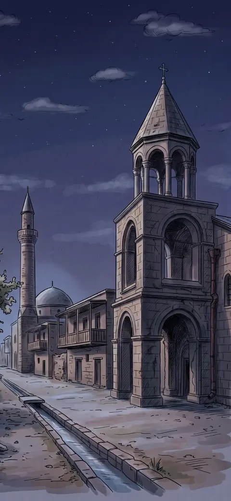
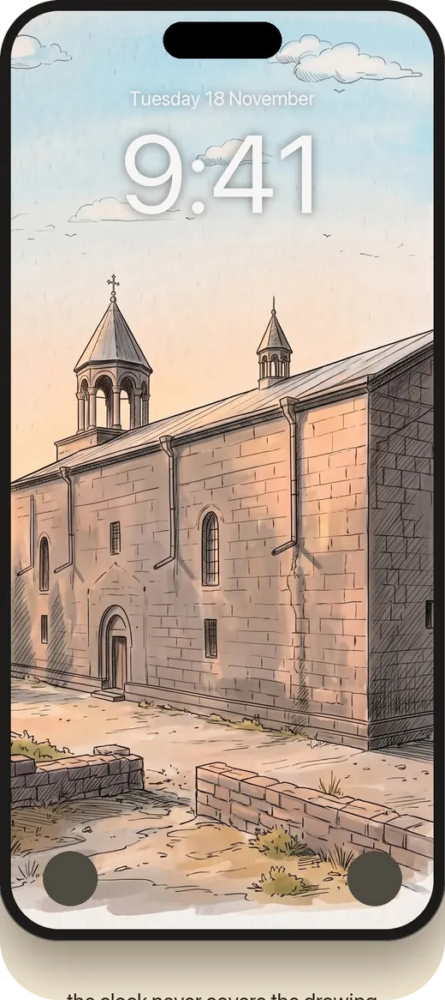
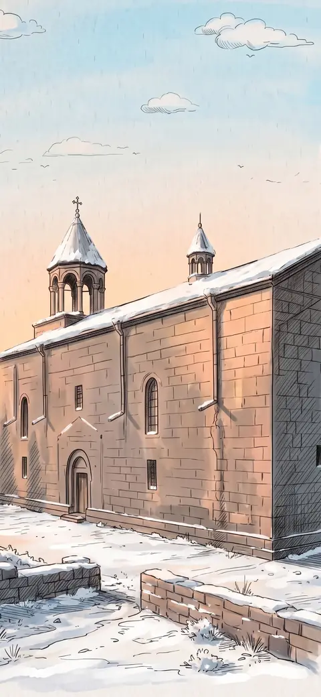

Սրահ II · Երևանը հեռախոսումЗал II · Ереван в телефонеRoom II · Yerevan on your phone
Պաստառներ «Կորսված Երևանը»Обои «Потерянный Ереван»Wallpapers “Lost Yerevan”



16$3 · iPhone · Android- 16 նկար՝ առանց գրությունների և նշանների16 рисунков, без надписей и знаков16 drawings, no text or watermarks
- ժամացույցը չի ծածկում շենքըчасы не закрывают зданиеthe clock never covers the building
- iPhone 1290×2796 և Android 1440×3200iPhone 1290×2796 и Android 1440×3200iPhone 1290×2796 and Android 1440×3200
- քո հեռախոսի համար, ոչ վաճառքիдля своего телефона, не для продажиfor your own phone, not for resale
Սեղմիր նկարին՝ տեսնելու համարНажми на рисунок, чтобы рассмотретьTap a drawing to see it
Գնել · $3Купить · $3Buy · $3
Վճարում քարտով՝ Polar-ի միջոցով։ Ներբեռնման հղումը՝ անմիջապես վճարումից հետո։Оплата картой через Polar. Ссылка на скачивание — сразу после оплаты.Card payment via Polar. The download link comes right after payment.